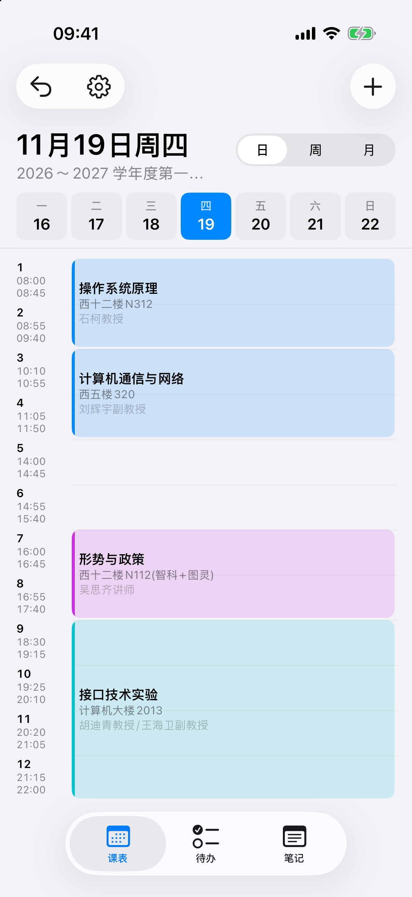
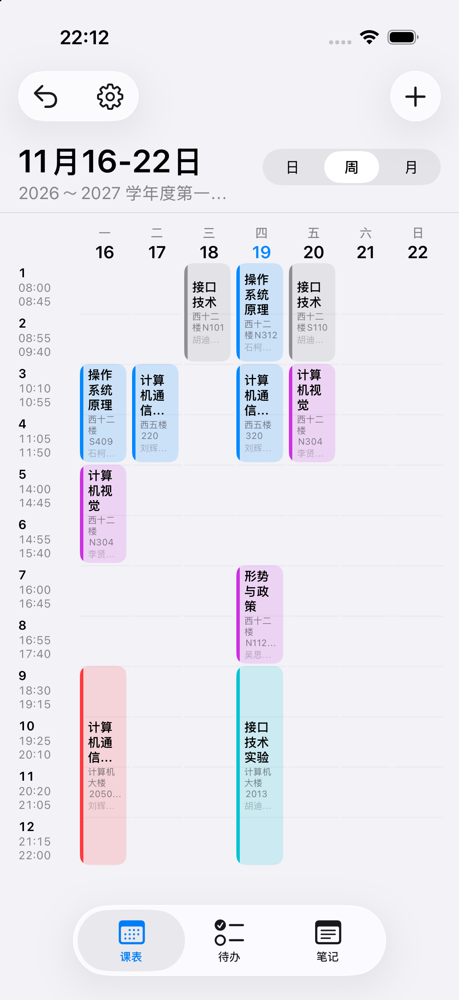
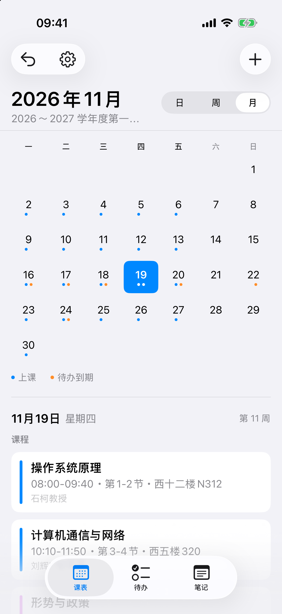
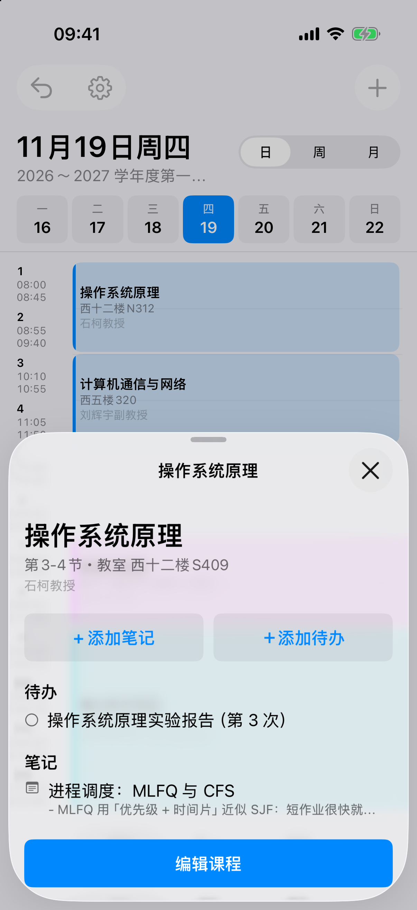
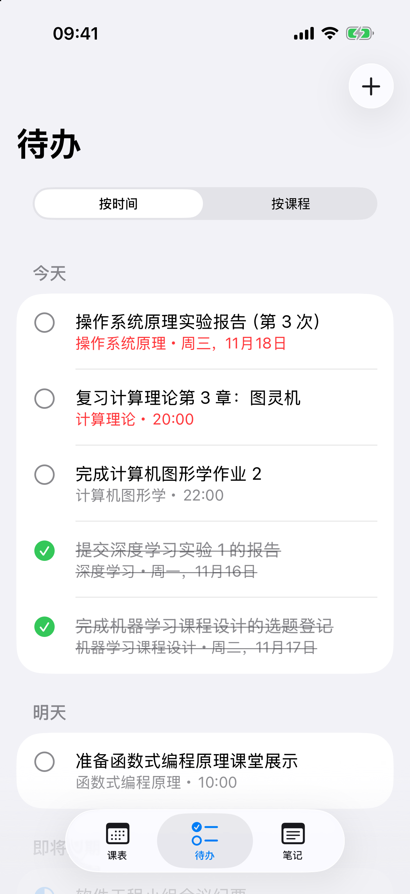
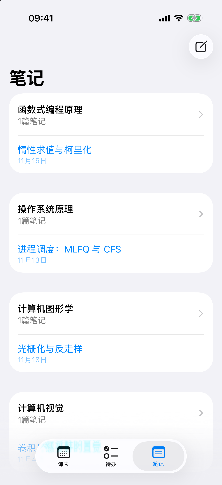
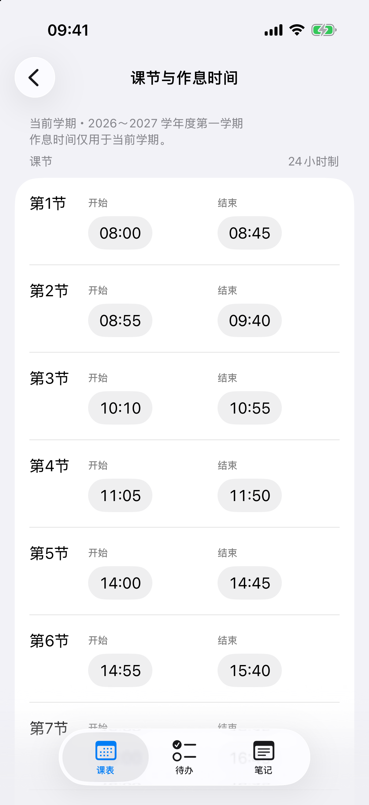
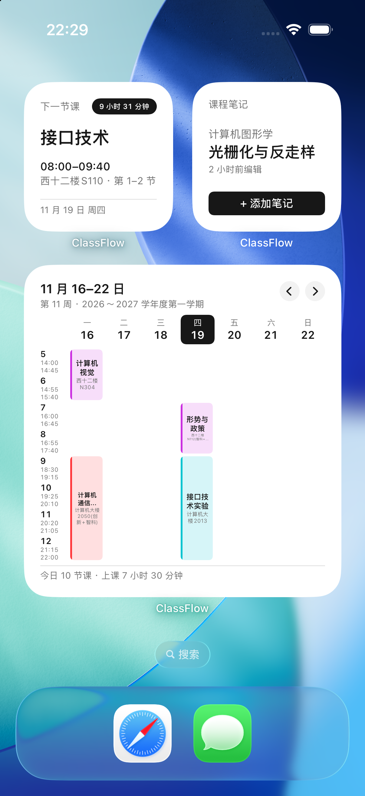

iOS 应用 · SwiftUI
ClassFlow
把课程、任务与笔记，放进清晰的学期日常。

产品理念
以课程为入口，连接学期里的日常安排
学生的学期生活不止是一张每周重复的课表，还包括每天的课程、即将到期的任务，以及每门课对应的学习记录。ClassFlow 将这些信息放在一起，让课程成为规划日程和整理学习内容的共同入口。
01 / 课表视图
从一周计划，到每天的课程节奏
日、周、月视图支持从当天安排到整月课程分布的不同浏览方式。


02 / 课程与学习
课程串联待办与学习记录
课程详情提供共同上下文，也支持单独管理与课程无关的待办。



03 / 贴合个人作息
让课表对应真实的课节时间
编辑每节课的起止时间，让课程安排贴合学校作息。

04 / 延伸到主屏幕
不打开应用，也能快速查看安排
主屏幕小组件呈现周课表、近期课程、待办和课程笔记，让常用信息触手可及。

技术实现
围绕日常使用构建 iOS 体验
SwiftUI构建 iOS 应用界面与交互
本地 JSON保存课程与学习数据
App Group在主应用与小组件间共享信息